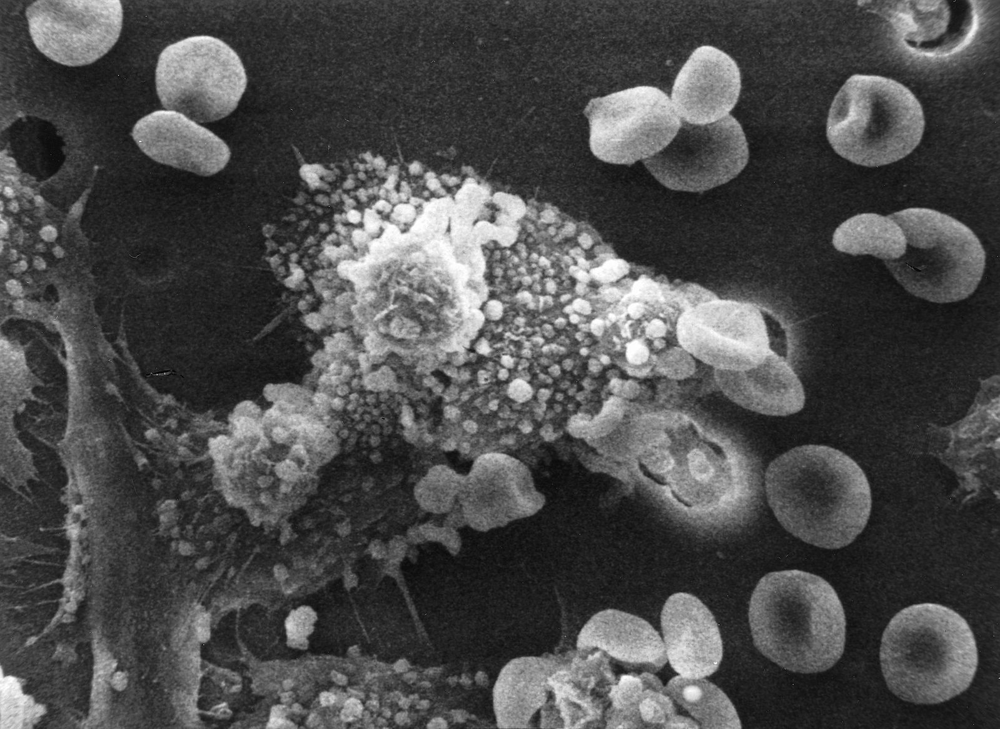
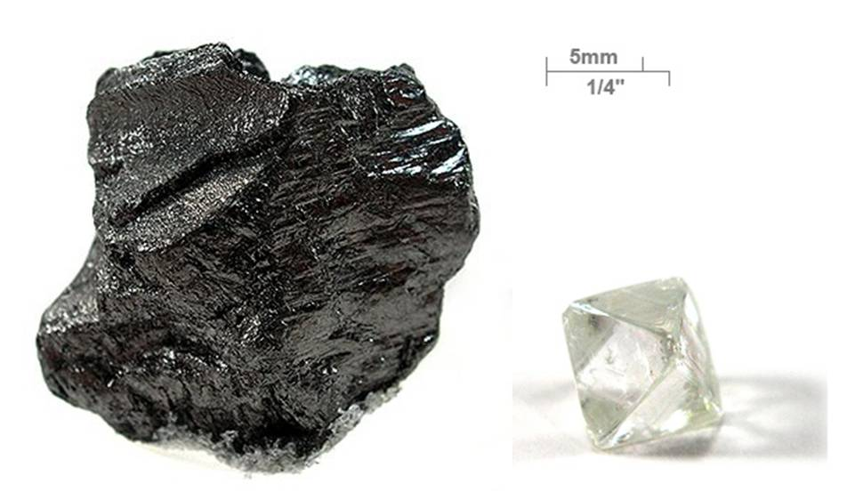
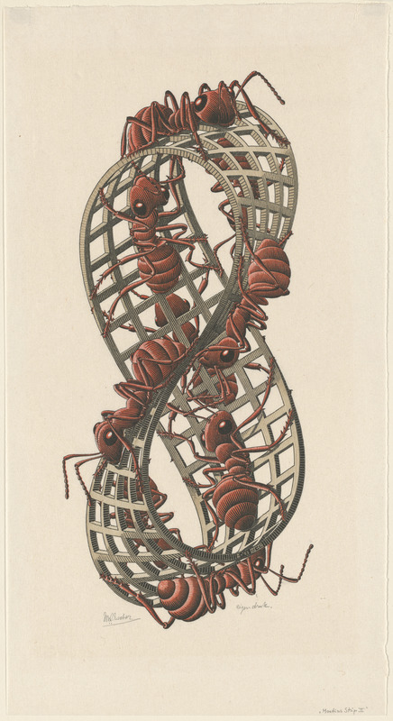
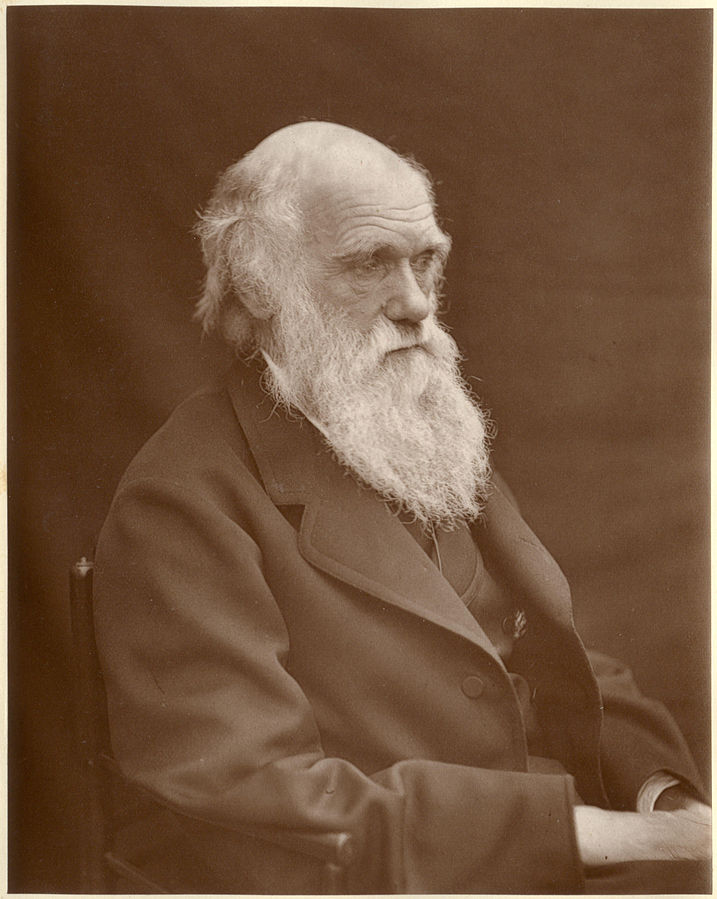
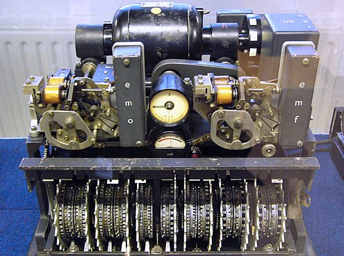
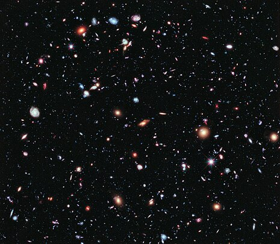
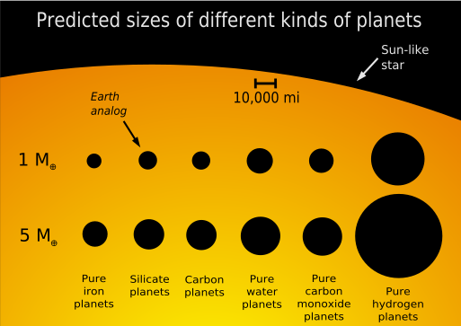
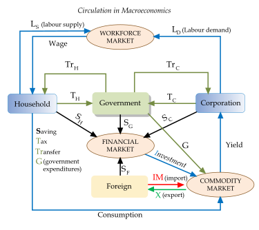
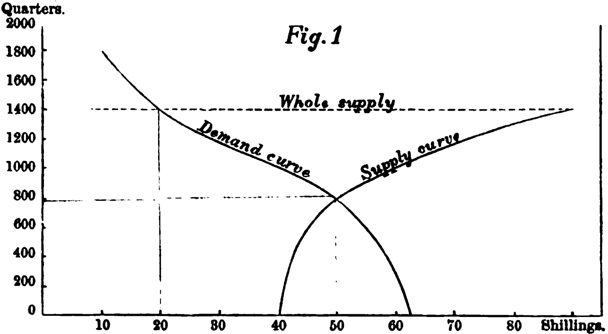

Search Unsolved Problems
Unsolved Problems in Natural Sciences
Physics
| Problem | Field & Subfield | Description | Introductory References |
|---|---|---|---|
| Quantum Gravity | Natural Sciences - Physics - Quantum Physics | The unification of general relativity with quantum mechanics to describe gravity at the quantum level. | Einstein, A. (1915). "The Field Equations of Gravitation". Sitzungsberichte der Preussischen Akademie der Wissenschaften zu Berlin. |
| Measurement Problem | Natural Sciences - Physics - Quantum Physics | Understanding how and why the collapse of the wavefunction occurs during measurement. | Von Neumann, J. (1932). Mathematical Foundations of Quantum Mechanics. Princeton University Press. |
Genetics 
| Problem | Field & Subfield | Description | Introductory References |
|---|---|---|---|
| Epigenetic Inheritance Mechanisms | Natural Sciences - Biology - Genetics | Understanding how epigenetic changes are inherited across generations without altering the DNA sequence. | Jablonka, E., & Lamb, M. J. (2005). *Evolution in Four Dimensions: Genetic, Epigenetic, Behavioral, and Symbolic Variation in the History of Life*. MIT Press. |
| Genetic Basis of Complex Diseases | Natural Sciences - Biology - Genetics | Identifying the genetic variants that contribute to multifactorial diseases like diabetes and heart disease. | Manolio, T. A. (2010). "Genome-wide association studies and assessment of the risk of disease". *New England Journal of Medicine*. |
Geology
| Problem | Field & Subfield | Description | Introductory References |
|---|---|---|---|
| Deep Earth Composition | Natural Sciences - Earth Sciences - Geology | Determining the precise composition and behavior of Earth's deep interior layers. | Schmucker, D., & Garcia, R. (1994). "Geodynamic modeling of the Earth's interior". *Geophysical Journal International*. |
| Plate Tectonics Origins | Natural Sciences - Earth Sciences - Geology | Understanding the origins and driving forces behind plate tectonics. | Wilson, J. T. (1967). *Plate Tectonics: An Insider's History of the Modern Theory of the Earth*. Princeton University Press. |
Meteorology
| Problem | Field & Subfield | Description | Introductory References |
|---|---|---|---|
| Accurate Hurricane Prediction | Natural Sciences - Earth Sciences - Meteorology | Improving the precision of hurricane path and intensity forecasts to enhance preparedness. | Fritz, T. A., & Rotunno, R. (2012). "The Hurricane Dilemma". *Bulletin of the American Meteorological Society*. |
| Understanding Tornado Formation | Natural Sciences - Earth Sciences - Meteorology | Elucidating the precise atmospheric conditions that lead to tornado genesis. | Doswell, C. A., et al. (2006). "Tornado Research and Future Directions". *Bulletin of the American Meteorological Society*. |
| Climate Change Attribution | Natural Sciences - Earth Sciences - Meteorology | Determining the extent to which specific weather events are influenced by anthropogenic climate change. | IPCC, 2021. *Climate Change 2021: The Physical Science Basis*. Contribution of Working Group I to the Sixth Assessment Report of the Intergovernmental Panel on Climate Change. |
| Improving Climate Models | Natural Sciences - Earth Sciences - Meteorology | Enhancing the accuracy and resolution of climate models to better predict future climate scenarios. | Frierson, D. M., et al. (2017). "Representation of Climate Feedbacks in Models". *Reviews of Geophysics*. |
| Extreme Weather Event Prediction | Natural Sciences - Earth Sciences - Meteorology | Developing models to predict the occurrence and impact of extreme weather events like heatwaves and floods. | Smith, K. R., & Wallace, J. M. (2016). "Climate Change and Extreme Weather". *Nature Climate Change*. |
| Atmospheric Aerosol Effects | Natural Sciences - Earth Sciences - Meteorology | Understanding how aerosols influence weather patterns and climate systems. | Seinfeld, J. H., & Pandis, S. N. (2016). *Atmospheric Chemistry and Physics*. Wiley. |
| Monsoon Variability | Natural Sciences - Earth Sciences - Meteorology | Investigating the factors that cause variability in monsoon systems across different regions. | Li, T., & Zhong, S. (2017). "Understanding Monsoon Dynamics". *Geophysical Research Letters*. |
| Predicting Atmospheric Rivers | Natural Sciences - Earth Sciences - Meteorology | Enhancing the prediction of atmospheric rivers and their associated precipitation impacts. | Barlow, M. J., & DeGaetano, A. T. (2005). "Recent Changes in North Pacific Atmospheric River Activity". *Journal of Climate*. |
| Sea Breeze Formation | Natural Sciences - Earth Sciences - Meteorology | Understanding the dynamics of sea breeze formation and its effects on local weather. | Yee, J., & Kreitzberg, D. (2002). "Air-sea interactions in sea-breeze systems". *Journal of Atmospheric Sciences*. |
| Predicting Atmospheric Turbulence | Natural Sciences - Earth Sciences - Meteorology | Improving models to forecast atmospheric turbulence for aviation safety and efficiency. | Donelan, M. A., & Brown, C. M. (2000). "Atmospheric Boundary Layers: Current Research and Applications". *Journal of Atmospheric and Oceanic Technology*. |
Number Theory
| Problem | Field & Subfield | Description | Introductory References |
|---|---|---|---|
| Riemann Hypothesis | Formal Sciences - Mathematics - Number Theory | Determining whether all non-trivial zeros of the Riemann zeta function have a real part of 1/2. | Riemann, B. (1859). "Über die Anzahl der Primzahlen unter einer gegebenen Größe". *Monatsberichte der Berliner Akademie*. |
| Goldbach's Conjecture | Formal Sciences - Mathematics - Number Theory | Asserting that every even integer greater than two is the sum of two prime numbers. | Goldbach, C. (1742). Letter to Euler. |
Artificial Intelligence
| Problem | Field & Subfield | Description | Introductory References |
|---|---|---|---|
| General AI | Formal Sciences - Computer Science - Artificial Intelligence | Developing AI systems that possess general intelligence comparable to human cognitive abilities. | Turing, A. M. (1950). "Computing Machinery and Intelligence". *Mind*. |
| AI Alignment Problem | Formal Sciences - Computer Science - Artificial Intelligence | Ensuring that AI systems' goals and behaviors align with human values and intentions. | Bostrom, N. (2014). *Superintelligence: Paths, Dangers, Strategies*. Oxford University Press. |
Organic Chemistry 
| Problem | Field & Subfield | Description | Introductory References |
|---|---|---|---|
| Asymmetric Synthesis Efficiency | Natural Sciences - Chemistry - Organic Chemistry | Enhancing the efficiency and selectivity of asymmetric synthesis methods for chiral molecules. | Sharpless, K. B. (1981). "Asymmetric Epoxidation of Olefins". *Chemical Reviews*. |
| Carbon-Carbon Bond Formation | Natural Sciences - Chemistry - Organic Chemistry | Developing new methods for efficient and selective carbon-carbon bond formation in complex organic molecules. | Stille, J. K., & Sanford, M. S. (2010). "Copper-Catalyzed Cross-Coupling Reactions". *Chemical Reviews*. |
| Biomimetic Catalysis | Natural Sciences - Chemistry - Organic Chemistry | Designing catalysts that mimic biological enzymes for sustainable and selective chemical transformations. | Sousa, E. M. C., & Ribeiro, F. M. (2015). "Biomimetic Catalysis: Principles and Applications". *Topics in Catalysis*. |
| Green Chemistry Processes | Natural Sciences - Chemistry - Organic Chemistry | Developing environmentally friendly chemical processes that minimize waste and energy consumption. | Sheldon, R. A. (2000). "Green chemistry: theory and practice". *Chemical Society Reviews*. |
| Photocatalytic Reactions | Natural Sciences - Chemistry - Organic Chemistry | Harnessing light to drive chemical reactions in a controlled and efficient manner. | Yamamoto, H. (2000). "Metal-Photocatalyzed Organic Reactions". *Chemical Reviews*. |
| Dynamic Combinatorial Chemistry | Natural Sciences - Chemistry - Organic Chemistry | Creating libraries of molecules that can adapt and self-organize in response to environmental stimuli. | Lehn, J.-M. (1995). "Supramolecular Chemistry: Concepts and Perspectives". *Angewandte Chemie International Edition*. |
| Polymer Synthesis Control | Natural Sciences - Chemistry - Organic Chemistry | Achieving precise control over polymer chain length, composition, and architecture during synthesis. | Carothers, H. E. (1939). "Some Problems of Polymer Chemistry". *Journal of the American Chemical Society*. |
| Mechanistic Pathways in Catalysis | Natural Sciences - Chemistry - Organic Chemistry | Elucidating the step-by-step mechanisms by which catalysts facilitate chemical reactions. | Hoffmann, R., & Houk, K. N. (2003). "The Woodward-Hoffmann rules in modern organic chemistry". *Science*. |
| Chiral Ligand Design | Natural Sciences - Chemistry - Organic Chemistry | Designing ligands that induce chirality in metal-catalyzed reactions to produce enantiomerically pure products. | Feringa, B. L., et al. (1995). "Chiral Ligands for Asymmetric Catalysis". *Chemical Reviews*. |
| Electrochemical Synthesis Methods | Natural Sciences - Chemistry - Organic Chemistry | Developing new electrochemical techniques for the synthesis of complex organic molecules. | Bard, A. J., & Faulkner, L. R. (2001). *Electrochemical Methods: Fundamentals and Applications*. Wiley. |
Topology 
| Problem | Field & Subfield | Description | Introductory References |
|---|---|---|---|
| Poincaré Conjecture in Higher Dimensions | Formal Sciences - Mathematics - Topology | Extending the Poincaré Conjecture to higher-dimensional manifolds and verifying its validity. | Perelman, G. (2003). "Ricci flow with surgery on three-manifolds". *arXiv preprint math/0211159*. |
| Four-Dimensional Smooth Poincaré Conjecture | Formal Sciences - Mathematics - Topology | Determining whether a smooth, simply connected 4-manifold is homeomorphic to the 4-sphere. | Freedman, M. (1982). "Topological invariants of smooth four-manifolds". *Annals of Mathematics*. |
| Understanding Exotic Spheres | Formal Sciences - Mathematics - Topology | Classifying and understanding the properties of spheres that are topologically but not smoothly equivalent to standard spheres. | Kervaire, M., & Milnor, J. (1956). "Groups of Homotopy Spheres". *Annals of Mathematics*. |
| Higher-Dimensional Knot Theory | Formal Sciences - Mathematics - Topology | Extending knot theory concepts to higher dimensions and understanding their classifications. | Rolfsen, D. (1976). *Knots and Links*. Princeton University Press. |
| Topological Quantum Field Theory | Formal Sciences - Mathematics - Topology | Developing a rigorous mathematical framework for quantum field theories based on topology. | Witten, E. (1989). "Topological Quantum Field Theory". *Communications in Mathematical Physics*. |
| Homotopy Groups of Spheres | Formal Sciences - Mathematics - Topology | Calculating and understanding the homotopy groups of spheres, which remain largely unresolved in higher dimensions. | Adams, J. F. (1964). "The Hopf Invariant and the Division Algebras". *Annals of Mathematics*. |
| Classification of Compact 4-Manifolds | Formal Sciences - Mathematics - Topology | Providing a complete classification system for compact four-dimensional manifolds. | Donaldson, S. K. (1983). "An Application of Gauge Theory to Four-Dimensional Topology". *Journal of Differential Geometry*. |
| Developing New Invariants | Formal Sciences - Mathematics - Topology | Creating novel topological invariants to distinguish between different topological spaces. | Viro, O., & Turaev, R. (1991). "Quantum Invariants of Knots and 3-Manifolds". *GTM*. |
| Infinite Dimensional Topology | Formal Sciences - Mathematics - Topology | Exploring the properties and classifications of infinite-dimensional topological spaces. | Kechris, A. S. (1995). *Classical Descriptive Set Theory*. Springer. |
| Applications of Topology in Data Analysis | Formal Sciences - Mathematics - Topology | Utilizing topological methods to analyze and interpret complex data sets. | Carlsson, G. (2009). "Topology and data". *Bulletin of the American Mathematical Society*. |
Evolutionary Biology 
| Problem | Field & Subfield | Description | Introductory References |
|---|---|---|---|
| Origin of Multicellularity | Natural Sciences - Biology - Evolutionary Biology | Understanding the evolutionary steps that led to the emergence of multicellular organisms from single-celled ancestors. | Nowak, M. A., et al. (2001). "The Evolution of Multicellularity". *Science*. |
| Evolution of Consciousness | Natural Sciences - Biology - Evolutionary Biology | Investigating how consciousness evolved in different species and its adaptive significance. | Gibson, C. (2016). "The Evolution of Consciousness". *Philosophical Transactions of the Royal Society B*. |
| Mechanisms of Speciation | Natural Sciences - Biology - Evolutionary Biology | Elucidating the genetic and ecological mechanisms that drive the formation of new species. | Baker, R. R. (1955). "Evolutionary Lines of Evidence from Alpine Plants". *Proceedings of the National Academy of Sciences*. |
| Coevolution of Hosts and Parasites | Natural Sciences - Biology - Evolutionary Biology | Understanding the reciprocal evolutionary influences between hosts and their parasites. | Ebert, D. (1994). "The Evolution of Parasites and Their Hosts". *The American Naturalist*. |
| Role of Horizontal Gene Transfer in Evolution | Natural Sciences - Biology - Evolutionary Biology | Assessing how horizontal gene transfer contributes to genetic diversity and evolutionary processes. | Ochman, H., et al. (2000). "Lateral gene transfer and the nature of bacterial innovation". *Nature*. |
| Evolution of Eusociality | Natural Sciences - Biology - Evolutionary Biology | Investigating how and why eusocial behaviors, such as those seen in bees and ants, evolved. | Wilson, E. O. (1971). *The Insect Societies*. Belknap Press. |
| Adaptive Radiation Mechanisms | Natural Sciences - Biology - Evolutionary Biology | Understanding how species diversify rapidly to fill various ecological niches. | Schluter, D. (2000). "The Ecology of Adaptive Radiation". *Oxford University Press*. |
| Genomic Basis of Adaptation | Natural Sciences - Biology - Evolutionary Biology | Identifying specific genomic changes that drive adaptive traits in organisms. | Kawecki, T. J., & Ebert, D. (2004). *The Genetics of Populations*. Oxford University Press. |
| Phylogenetic Placement of Early Life Forms | Natural Sciences - Biology - Evolutionary Biology | Determining the evolutionary relationships of early life forms based on fossil and molecular data. | Lake, J. K., & Stegen, J. C. (2009). "Phylogenetics: the First Two Million Years". *Nature*. |
| Impact of Punctuated Equilibrium on Biodiversity | Natural Sciences - Biology - Evolutionary Biology | Exploring how punctuated equilibrium influences patterns of biodiversity and species distribution. | Gould, S. J., & Eldredge, N. (1977). "Punctuated equilibria: an alternative to phyletic gradualism". *Models in Paleobiology*. Freeman. |
Epistemology
| Problem | Field & Subfield | Description | Introductory References |
|---|---|---|---|
| The Gettier Problem | Humanities - Philosophy - Epistemology | Questioning whether having justified true belief is sufficient for knowledge. | Gettier, E. L. (1963). "Is Justified True Belief Knowledge?". Analysis. |
| Problem of Induction | Humanities - Philosophy - Epistemology | Understanding how inductive reasoning justifies beliefs about unobserved phenomena. | Hume, D. (1748). An Enquiry Concerning Human Understanding. Oxford University Press. |
Ethics
| Problem | Field & Subfield | Description | Introductory References |
|---|---|---|---|
| The Trolley Problem | Humanities - Philosophy - Ethics | Exploring the moral implications of making decisions that affect the lives of others. | Foot, P. (1967). "The Problem of Abortion and the Doctrine of the Double Effect". Oxford Review. |
| Moral Relativism vs. Moral Objectivism | Humanities - Philosophy - Ethics | Debating whether moral principles are universal or culturally dependent. | Mackie, J. L. (1977). Ethics: Inventing Right and Wrong. Penguin. |
Philosophy of Mind
| Problem | Field & Subfield | Description | Introductory References |
|---|---|---|---|
| The Hard Problem of Consciousness | Humanities - Philosophy - Philosophy of Mind | Understanding why and how physical processes in the brain give rise to subjective experience. | Chalmers, D. J. (1995). "Facing Up to the Problem of Consciousness". Journal of Consciousness Studies. |
| Mind-Body Problem | Humanities - Philosophy - Philosophy of Mind | Exploring the relationship between mental states and physical processes. | Descartes, R. (1641). Meditations on First Philosophy. Cambridge University Press. |
Computational Complexity

| Problem | Field & Subfield | Description | Introductory References |
|---|---|---|---|
| P vs NP Problem | Formal Sciences - Computer Science - Computational Complexity | Determining whether every problem whose solution can be quickly verified can also be solved quickly. | Cook, S. A. (1971). "The Complexity of Theorem-Proving Procedures". Proceedings of the Third Annual ACM Symposium on Theory of Computing. |
| Exponential Time Hypothesis | Formal Sciences - Computer Science - Computational Complexity | Hypothesizing about the exact computational complexity of NP-complete problems. | Impagliazzo, R., & Paturi, R. (2001). "On the Complexity of k-SAT". Journal of Computer and System Sciences. |
Cryptography 
| Problem | Field & Subfield | Description | Introductory References |
|---|---|---|---|
| Integer Factorization Problem | Formal Sciences - Computer Science - Cryptography | Determining the most efficient method to factor large integers, which underpins RSA encryption. | Rivest, R. L., Shamir, A., & Adleman, L. (1978). "A Method for Obtaining Digital Signatures and Public-Key Cryptosystems". Communications of the ACM. |
| Discrete Logarithm Problem | Formal Sciences - Computer Science - Cryptography | Finding efficient algorithms for computing discrete logarithms, crucial for elliptic curve cryptography. | Miller, V. S. (1986). "Use of Elliptic Curves in Cryptography". Advances in Cryptology—CRYPTO'85. |
Cosmology 
| Problem | Field & Subfield | Description | Introductory References |
|---|---|---|---|
| Dark Matter | Natural Sciences - Astronomy - Cosmology | Understanding the nature and composition of dark matter that does not emit light but exerts gravitational effects. | Rubin, V. C., & Ford, W. K. Jr. (1970). "Rotation of the Andromeda Nebula". Astrophysical Journal. |
| Dark Energy | Natural Sciences - Astronomy - Cosmology | Investigating the mysterious force causing the accelerated expansion of the universe. | Riess, A. G., et al. (1998). "Observational Evidence from Supernovae for an Accelerating Universe". Astronomical Journal. |
Exoplanetary Science 
| Problem | Field & Subfield | Description | Introductory References |
|---|---|---|---|
| Habitability Criteria | Natural Sciences - Astronomy - Exoplanetary Science | Defining the conditions that make exoplanets suitable for life. | Kasting, J. F., Whitmire, D. P., & Reynolds, R. T. (1993). "Habitable Zones Around Main Sequence Stars". Icarus. |
| Exoplanet Atmospheres | Natural Sciences - Astronomy - Exoplanetary Science | Characterizing the atmospheres of exoplanets to detect signs of life. | Seager, S., & Deming, D. (2010). "Exoplanet Atmospheres". Annual Review of Astronomy and Astrophysics. |
Macroeconomics 
| Problem | Field & Subfield | Description | Introductory References |
|---|---|---|---|
| Business Cycle Causes | Social Sciences - Economics - Macroeconomics | Understanding the fundamental causes of economic booms and busts. | Lucas, R. E. Jr. (1977). "Understanding Business Cycles". Carnegie-Rochester Conference Series on Public Policy. |
| Inflation Dynamics | Social Sciences - Economics - Macroeconomics | Modeling the factors that influence inflation rates over time. | Friedman, M. (1968). "The Role of Monetary Policy". American Economic Review. |
Behavioral Economics 
| Problem | Field & Subfield | Description | Introductory References |
|---|---|---|---|
| Rationality in Decision-Making | Social Sciences - Economics - Behavioral Economics | Exploring how cognitive biases affect economic choices. | Kahneman, D., & Tversky, A. (1979). "Prospect Theory: An Analysis of Decision under Risk". Econometrica. |
| Nudging and Policy Design | Social Sciences - Economics - Behavioral Economics | Investigating how subtle changes in policy can influence behavior for societal benefit. | Thaler, R. H., & Sunstein, C. R. (2008). Nudge: Improving Decisions About Health, Wealth, and Happiness. Yale University Press. |